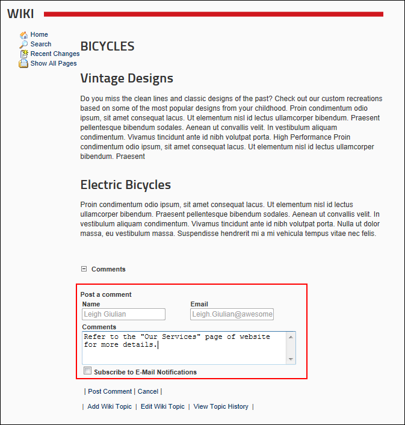

Adding a Comment
How to add a comment to a Wiki page. Note: Commenting may not be available on some or all pages.
- Navigate to the required page. See "Navigating the Wiki"
- In the Comments section, click the Add Comment link.
- Unauthenticated Users Only, complete these fields:
- In the Name text box, enter your name.
- In the Email text box, enter your email address.
- In the Comments text box, enter your comment.

- Optional. At Subscribe to E-Mail Notifications to be notified of updates to this Wiki page.
- Click the Post Comment link. This displays the comment including the date and time it was posted in the Comments section.

The newly added Comment